Take-home Exercise 1
Exercise Description
In this take-home exercise, we are required to reveal the demographic structure of Singapore at planning area level, using the age-sex pyramid method. We are further required to display nine selected planning areas in a single view, in a trellis display.
I have chosen to select the 9 most populous planning areas in Singapore.
Data used for this exercise was sourced from the Singapore Department of Statistics, retrieved on 19/1/2023. (Refer to “Singapore Residents by Planning Area / Subzone, Age Group, Sex and Type of Dwelling, June 2022”)
The data visualisation is available here.
Procedures used to prepare the data visualisation
#1. Data Checking
Looking at the raw data, we see that each row shows the population count for a particular gender and an age group, for a given type of dwelling located in each sub-zone under every planning area. By using the “Describe…” feature for each column, we find all the possible values in each field and note that there are no missing values. We further note the range of values under “Population” is 0 to 2,300, which is entirely plausible. We conclude that no data cleaning is required.
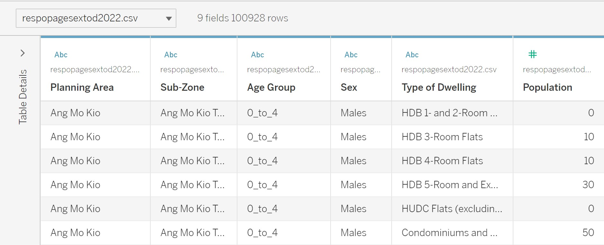
(Note that column headers have been renamed from the original raw data, for ease of understanding.)
#2. New columns “Female” and “Male”
Using “Create Calculated Field…” in Data Source, I created two new columns, “Female” and “Male”. This will make it easier to model the X-axis later on.
The value in each field under “Female” corresponds to the “Population” value for that row, if the value for “Sex” in that row is “Females”. Otherwise, the value is 0. A snapshot of the formula used is shown below. Similarly, the value in each field under “Male” corresponds to the “Population” value for that row, if the value for “Sex” in that row is “Males”. Otherwise, the value is 0.
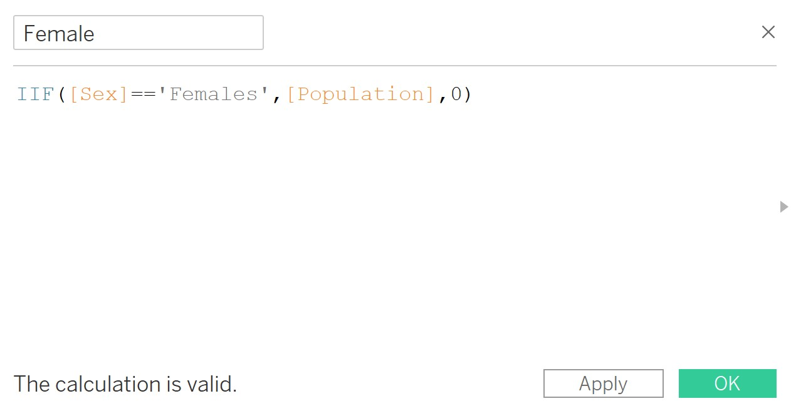
#3. Identify top 9 most populous planning areas
Plotting SUM(Population) by Planning Area, I am able to identify and keep only the top 9 most populous areas, as shown below.
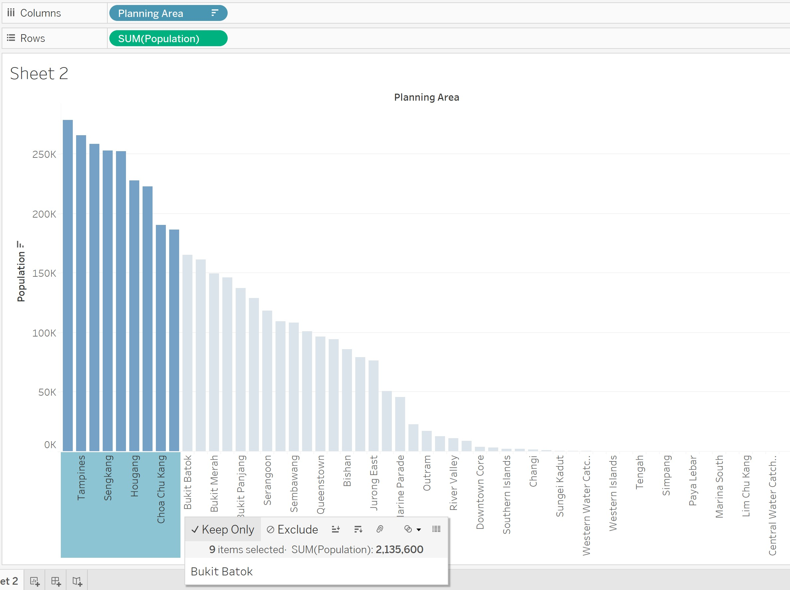
#4. Column and row indices for trellis display
(For this step, I relied heavily on this excellent tutorial on creating trellis charts, by Youtuber sqlbelle.)
We are able to display the 9 age-sex pyramids in a 3x3 display by setting up column and row indices. There are four steps to doing this:
Step 1: In a worksheet, under “Data”, create a new calculated field which we can call “Index”. This returns the index for the current row in the partition.
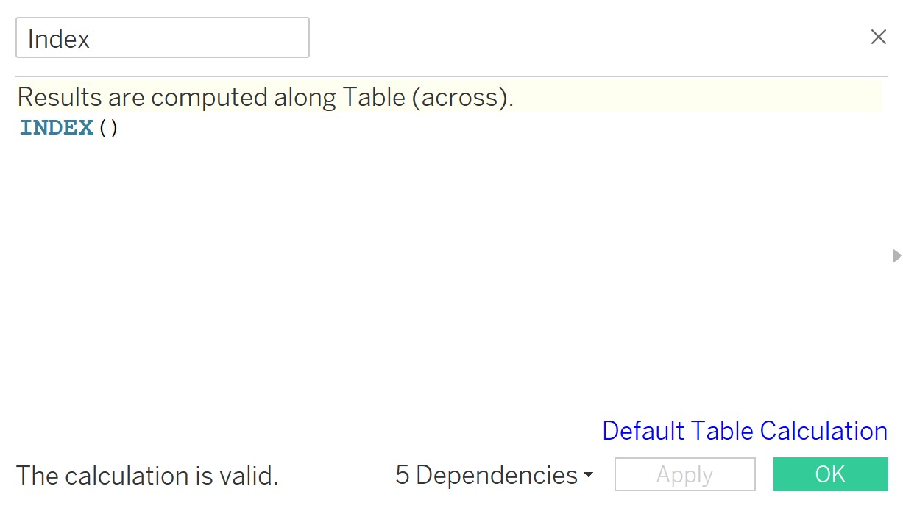
Step 2: Under “Data”, create a parameter called “No_of_Columns”. We give this a current value of 3, an integer, which is the number of columns we would like in our trellis matrix. Creating a parameter makes it easier to adjust how many columns we need in future, in case e.g. we wish to include more planning areas.
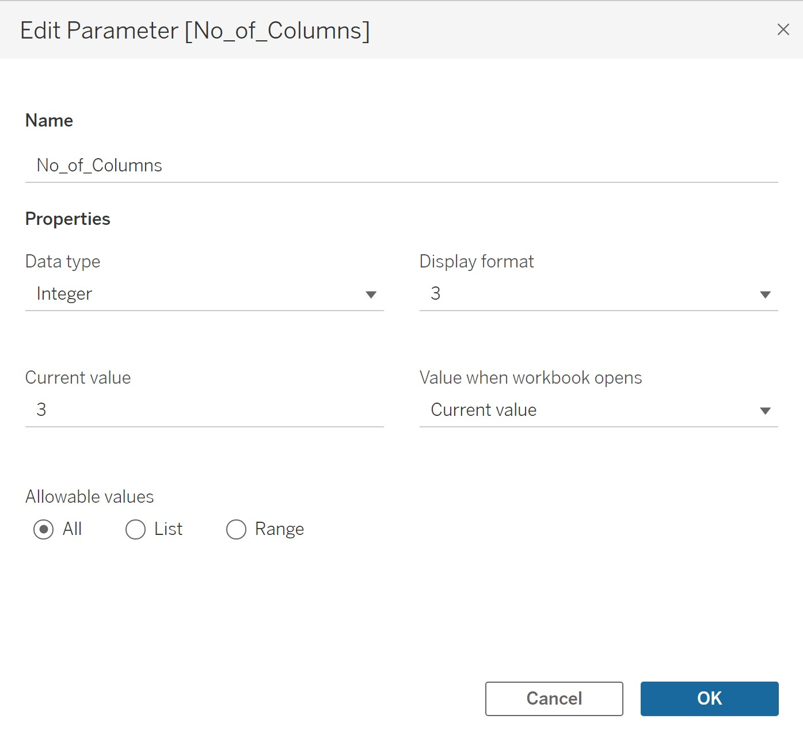
Step 3: Create a new calculated field called “Columns”. This will “label” each planning area with a column number 1, 2 or 3, and ensure that each number does not appear more times than the number of rows in our trellis matrix.
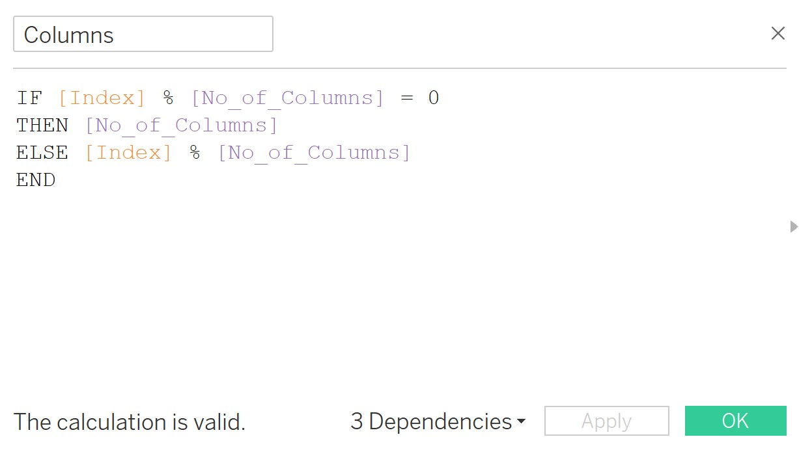
Step 4: Then create a new calculated field called “Rows” which will label each planning area with a row number 0, 1 or 2.
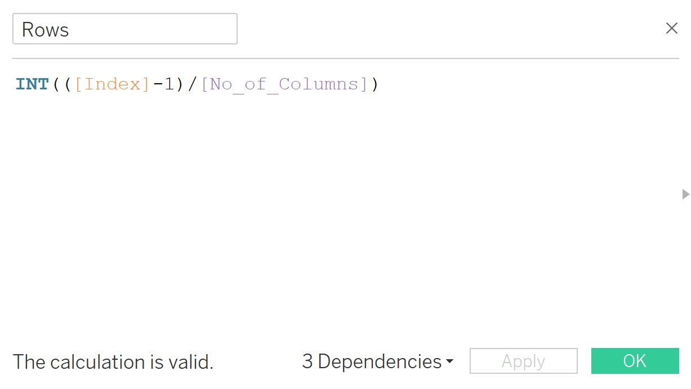
For all three new fields “Index”, “Columns” and “Rows”, I convert the field value to discrete by choosing the appropriate option from the dropdown menu on each field in the Data panel.
By dragging “Planning Area” to Columns and dragging both “Columns” and “Rows” to “Text”, I am able to check the assignment of column and row numbers to each planning area. It looks like this:
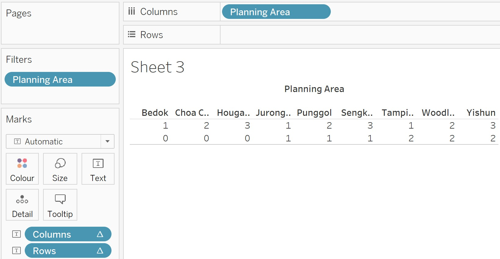
I note that the planning areas are alphabetically ordered, following the original data set. I will return to this issue later.
#5. Create the pyramids
Step 1: Drag “Planning Area” onto “Colour” on the Marks card. This will automatically distinguish different charts for different planning areas by colour. (There is also a possibility of dragging “Planning Area” onto “Detail”, to set the level of detail at which the charts are to be distinguished, i.e. by planning area. However, I eventually chose against this, and will explain why later.)
Step 2: Drag “Columns’,”Female” and “Male” to columns. Tableau automatically chooses “SUM(Female)” and “SUM(Male)”. This is what I want so I do not change it. In the drop-down list for “Columns”, I click on “Compute Using” and choose “Planning Area”.
Step 3: Drag “Rows” and “Age Group” to rows. In the drop-down list for “Rows”, I click on “Compute Using” and choose “Planning Area”.
Step 4: Since pyramid charts are desired, I need to reverse the bars for the left-hand panes in each planning area’s chart, i.e. the pane showing SUM(Female). I do this by right-clicking on the x-axis for “Female”, choosing “Edit axis” and ticking the check-box next to “Reversed”.
Step 5: The main issue now is that while the planning areas are distinguished by colour, within each planning area the colours for both Female and Male bars are the same. I am not able to change this (or rather, I do not know how!). However, I am able to change the background colour of the panes. I do this by right-clicking on “Males” in the x-axis, and clicking on “Format”. The Format panel appears on the right, and I click on the “Shading” icon at the top. Under “Column banding”, I am able to choose a new background colour for all “Male” panes. This makes it easier to visually distinguish the “Female” and “Male” bars.
A few further changes are needed to aid visual analysis:
The Age-Group labels can be ordered in descending fashion by clicking on the sorting icon next to “Age-Group”. This sorting method puts the age group “5_to_9” between “45_to_49” and “50_to_55”, so I have to manually move it to the correct position.
I can reorder the planning areas in the trellis in descending order of their respective total population sizes, simply by reordering their positions in the legend at the upper right corner.
On the Marks card, for both SUM(Female) and SUM(Male), I click on “Label”, tick the check-box next to “Show mark labels”, click on “Min/Max” and choose only the option of labelling the maximum value. (In all planning areas, it is very clear that the smallest age groups are those 90 and over, hence there is no additional value in labelling these.)
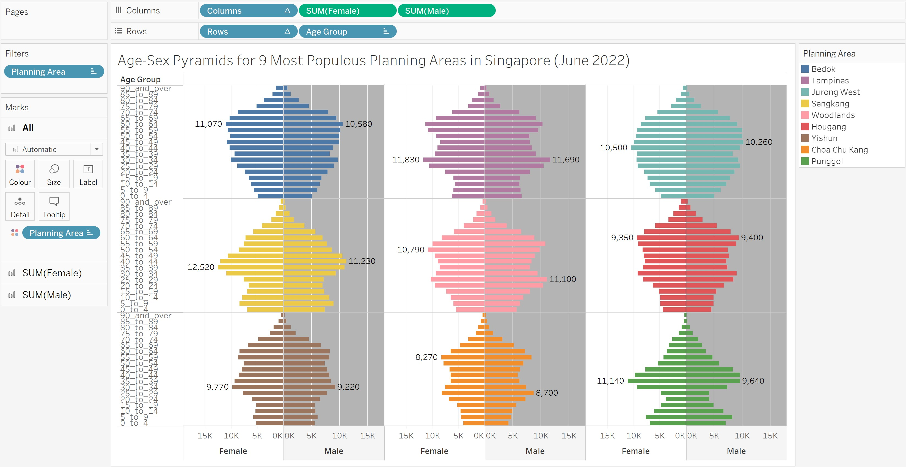
Other comments on procedures
I note that if I had dragged “Planning Area” to “Detail” instead, the colours for Female and Male bars would be different. This would traditionally be how pyramid charts are presented. However, I encountered two problems. First, I could not figure out how to label each chart with the planning area’s name except manually. Second, I was unable to reorder the charts to show descending order of total population size for each planning area, except by using a new data file which had the planning areas in the desired order. As there were only 9 planning areas of interest, the additional time required to make these changes was not that long, however, it would be very troublesome if the number of planning areas displayed was larger. Hence I opted against this version, shown below.
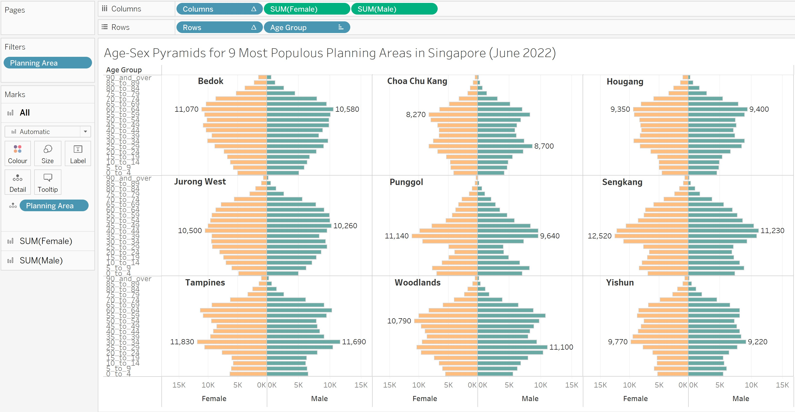
Another way to maintain traditional bi-coloured pyramid charts was simply to avoid the creation of a trellis altogether, and have the planning areas lined up in a single row. This format also allowed for easy re-ordering of the planning areas in descending order of total population size. Personally, I also thought it was easier for comparison purposes. Just for interest, this version is also shown, below.
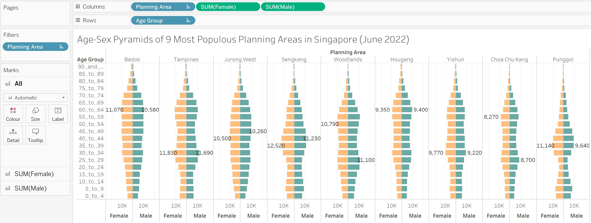
Discussion
In general, the widest parts of all pyramids are in the middle, indicating a larger adult and elderly population, and fewer young people. That all 9 planning areas demonstrate this could suggest an overall aging population in Singapore, rather than the possibility that certain planning areas attract more adults and elderly than others.
The elderly (65 years and over) as a proportion of total residents is generally the same across all areas. In absolute terms, Bedok, Tampines and Hougang appear to have the largest number of residents who are very elderly (80 years and over). This could have implications for town-planning in terms of accommodating accessibility and mobility (e.g. more lifts and ramps, wider and level footpaths to accommodate mobility aids), and preventing potential hazards (e.g. avoiding shared-use paths), for the elderly. It may also mean that these areas require more public healthcare facilities such as polyclinics, since the elderly are more likely to require healthcare services but are also less likely to be able to afford private healthcare. More geriatric services may also be required.
In contrast, young people (up to 14 years) as a proportion of total residents is more variable across areas. For example, this proportion is much larger in Sengkang and Punggol. This also has implications for town-planning in terms of providing more active spaces designed for younger people, as well as the need for a higher concentration of schools.
In all areas except Bedok and Jurong West, we see a pattern of widening at two points. The age groups at each of the widest two points are about a generation (30 years) apart. For example, the pyramid for Tampines widens towards the age group 30 – 34 years, and again at 60 – 64 years. The pyramid for Punggol widens towards the age group 5 – 9 years, and again at 35 – 39 years. This could suggest two-generational households forming a majority of residents in these planning areas (adults with their parents in the case of Tampines and young families in the case of Punggol). However, for Bedok and Jurong West, a deeper dive may be needed to see if there is a higher proportion of elderly living alone or with their spouses, as they may require more social care.
In general, the numbers of females and males living in each area are fairly balanced. In all planning areas except Woodlands and Choa Chu Kang, the largest age groups for both females and males are either the same or adjacent. In Woodlands and Choa Chu Kang, we note that the largest age group for males is 25 – 29 years (and in the range of 50 – 59 for females). This may be because of male work permit or S Pass holders living in these areas – Woodlands is close to the causeway to Johor Bahru, Malaysia, while there is a large industrial zone in Choa Chu Kang. Assuming the overall global trend that most crime is committed by young males, from a security perspective, these areas may warrant closer observation.